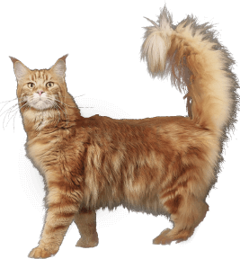

<section class="features">
  <div class="container features__container">
    <h2 class="features__title">Особенности породы</h2>
    <p class="features__text">Мейн-Кун - это порода, которая вызывает к себе уважение. Приобретая в свой дом этого питомца, вы получите умное животное, которому нет равных </p>
    <div class="features__image">
      
    </div>
    <ul class="features__list">
      <li class="features__item">Легко уживается в семьях с детьми или другими животными</li>
      <li class="features__item">Выполняет команды как дрессированная собака</li>
      <li class="features__item">Вес может достигать 12 кг, а длина 1 м</li>
      <li class="features__item">Внешний вид этой кошки похож&nbsp;на&nbsp;дикую рысь</li>
    </ul>
  </div>
</section>
